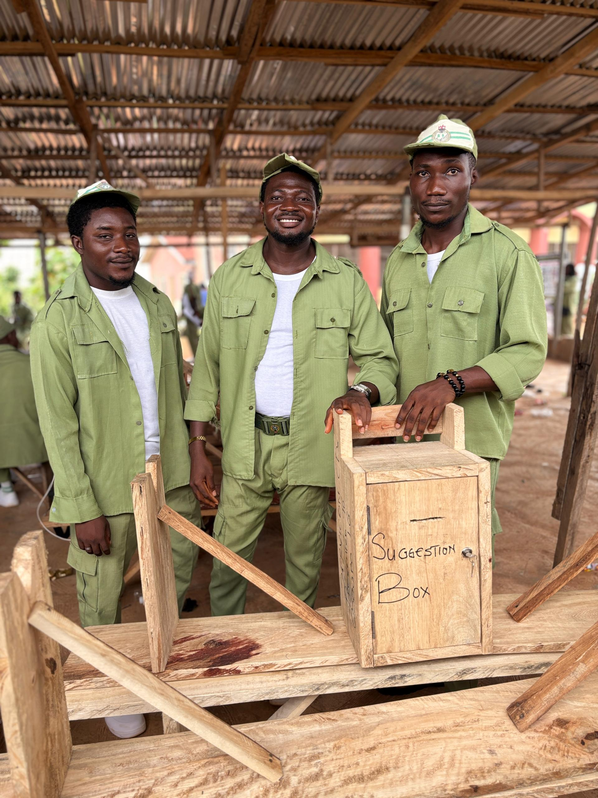
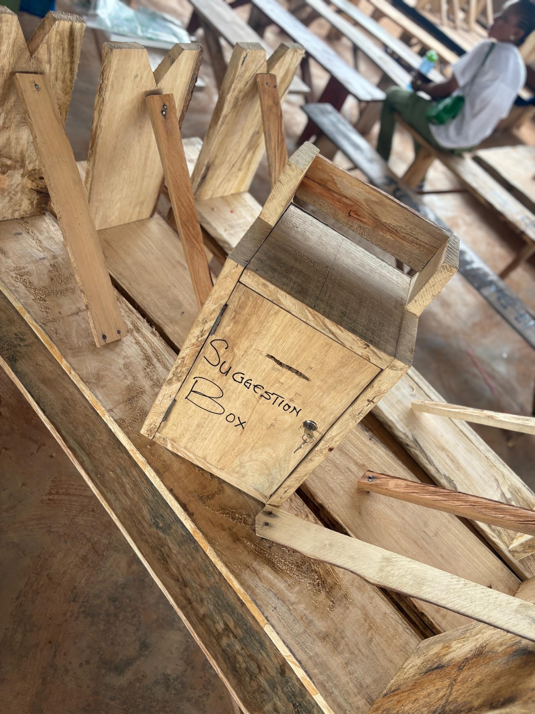
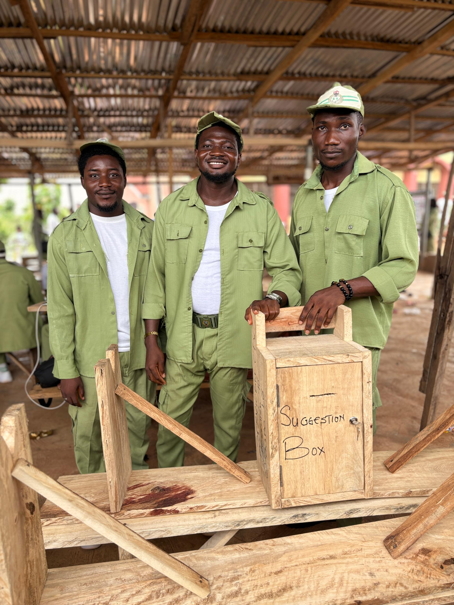
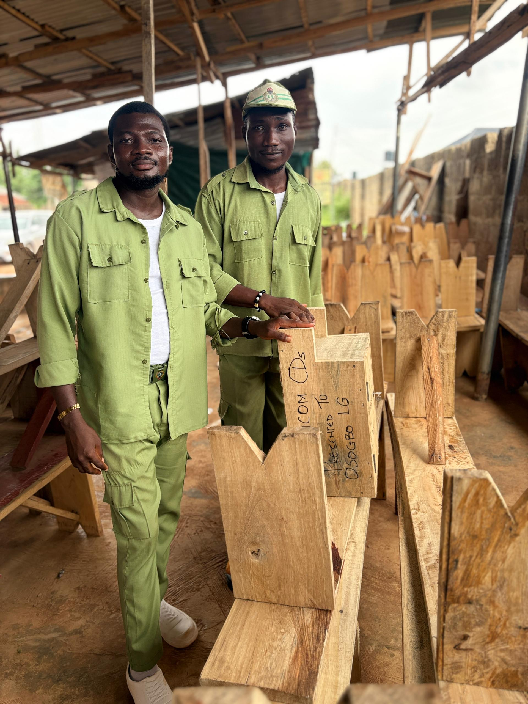
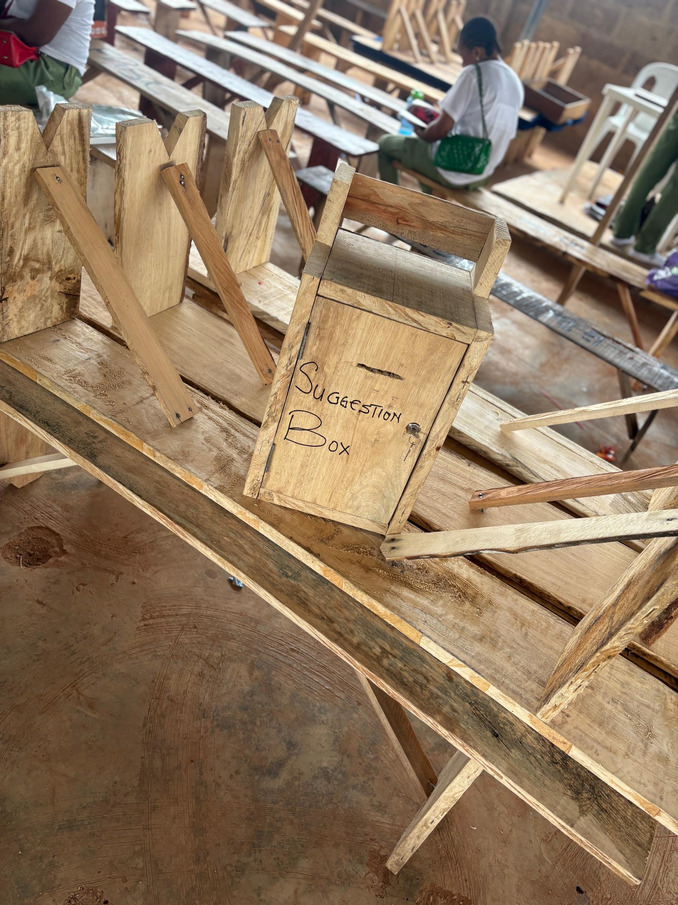
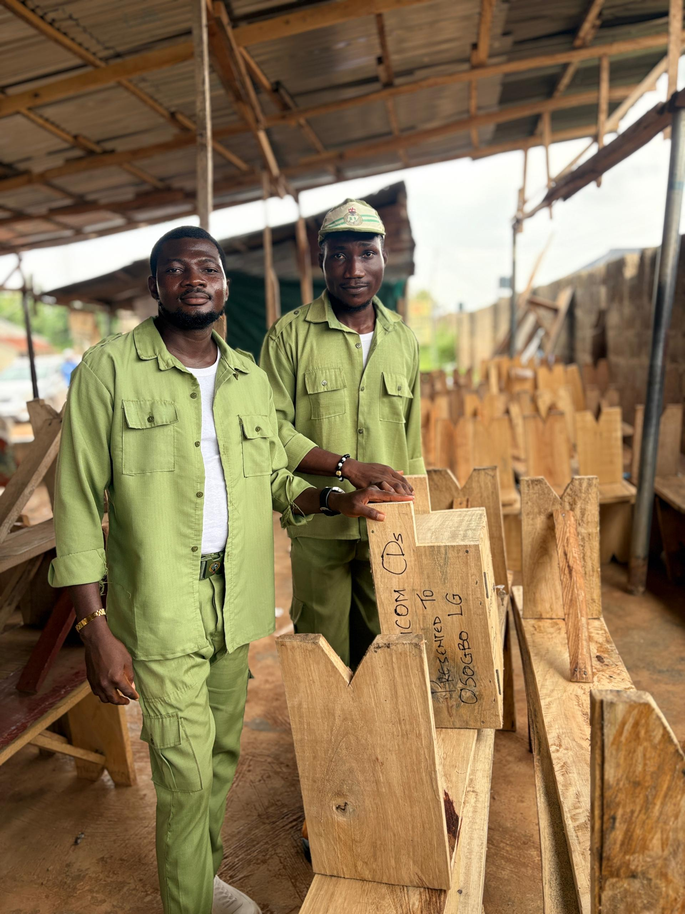
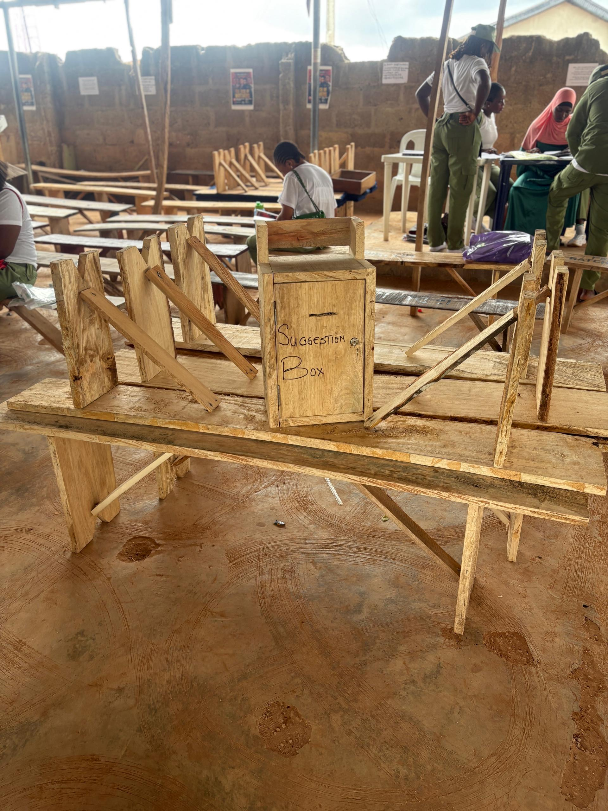
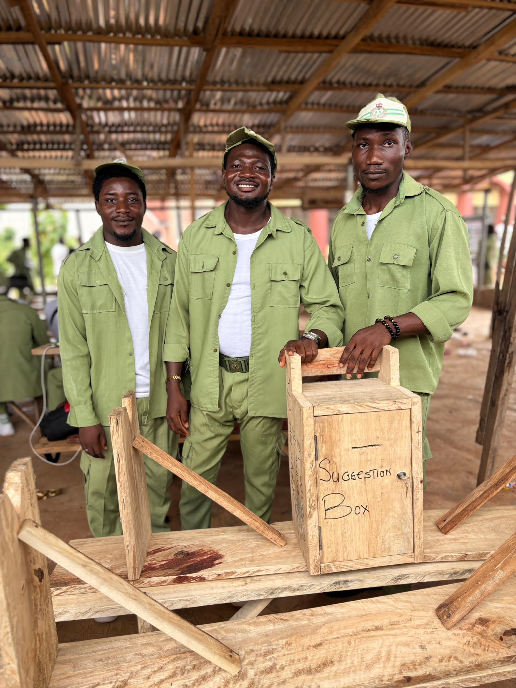

Date: May, 2026
Venue: NYSC Secretariat, Osogbo

In a quiet but powerful act of service, the SERVICOM CDS team installed comfortable benches and a suggestion box at the NYSC Secretariat in Osogbo.
Eight ergonomic benches were provided for corps members to rest during CDS sign-in and meetings. A secure suggestion box was also installed for anonymous feedback.
This initiative reflects dignity, comfort, and listening as core values of service delivery.
Corps members immediately began using the benches, and the suggestion box quickly started receiving feedback.







“Service isn’t always loud. Sometimes, it’s a bench, a box, and the courage to listen.”